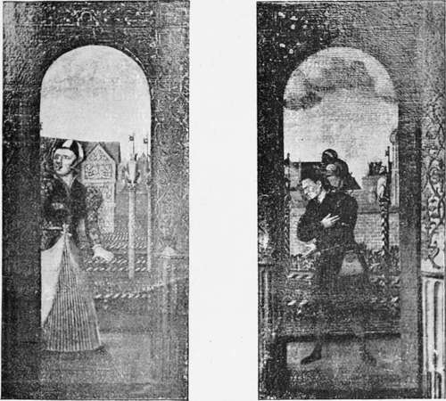

Early Tudor Gardens. Part 4
Description
This section is from the book "A History Of Gardening In England", by Alicia Amherst. Also available from Amazon: A History Of Gardening In England.
Early Tudor Gardens. Part 4
The Earl of Surrey made extensive gardens round the house he built on the site of St. Leonard's Priory, near Norwich, which he called Mount Surrey. About this time the closing of some of the common lands caused some considerable riots, and in 1549 all the trees in the appleyards at Mount Surrey were destroyed by the rebels, and used for making tents and huts. This was one of the most important gardens laid out on the site of a religious house, and it was not until a succeeding generation, when the taste for gardening was still more universal, that many others of the new proprietors followed this example.
We have already had occasion to refer to Hampton Court, in describing the characteristics of Tudor gardens. There are such full accounts left of the expenses incurred in making these gardens, both under the direction of Cardinal Wolsey and of Henry VIII., that, although we do not know the exact plan, a very fair idea of what they were like may be gathered. The land which Wolsey covered with the building, gardens and park, consisted of two thousand acres. In the south-west corner of this ground stood the old manor house, and round this the Cardinal laid out gardens and orchards, separated by brick walls, and beyond the walls, a park. He retained part of the manor house garden, for it is noted several times as "the old garden." John Chapman was head-gardener at this time, and remained in that position, with a salary of £12 a year, when the King took possession of the disgraced Cardinal's lands in 1529. The gardens were soon after greatly enlarged. A new orchard was made to the north of the old gardens, and pears, damsons, medlars, cherries, apples, cucumbers and melons were grown, and forty-three bushels of strawberries were planted at one time. There was a flower-garden which supplied the Queen with roses, and a kitchen garden, where "herbes for the king's table " were grown. Apart of these gardens was destroyed when the new ones were made in 1533. The ground was then manured and carefully measured out into several plots, each surrounded by a brick wall. The largest plot was the King's new garden, the site of which is now called the "Privy Garden." In this there were gravel paths, and little raised mounds with sundials on them, and between the paths, railed beds cut in the grass. The rails were trained with roses, and yew, cypress or juniper trees planted in the centre of each bed ; while along the walls were apple, pear and damson trees, and under them " violets, prymroses, sweet williams, gillifer slips, mynt and other sweete flowers," and this garden contained the mount and arbour. Another plot was the " Pond Garden," which merely seems to have contained the ponds, and was only decorated with the " beestes," as there is no mention of flowers being planted in it. There was the "little garden," of which not much is known, except that sixty-seven apple-trees were bought for it from "William gardener of London merchant, at 6d. the piece." The distinguishing features of Hampton Court from all other gardens that we know anything of at this time, were the "beasts" and the "dials." The carved animals holding "vanes," and the brass dials, seem to have been put in every part of the gardens and orchards. The beasts were set at intervals along the railed beds, and about the mount and all round the ponds, and the entries concerning them in the accounts are very frequent.*
Picture at hampton court showing the railed beds and beasts.
" Also paid to Bryse Auguston, of Westminster, clockmaker, for making of 20 brazen dials for the king's new garden at 4s. 4d. the piece, £4. 6s. 8d.— For making of bestes in timber for the king's new garden—paid to Edmund More, of Kyngston, freemason, for cutting, making and carving of 159 of the king's and the queen's beestes standing in the king's new garden at 20s. the piece . . . £159".
* 25 Henry VIII. (1533). Exchequer, Treasury of the Receipts, Miscellaneous Books, No, 238.
(1530) " Item dieu to Anthony Transylyon, of Westminster, clockmaker, for seven dials of him bought which are bestowed in the privy orchard, at 4s. 4d. the piece,30s. 4d.—Joiners setting up the bestes upon the posts in the privy orchard, Henry Currer, at 8d. by day, 4s. ; John Carpenter, at 6d. by day, 3s. Payments for painting the king's festes ( = bestes) in the privy orchard . . . some holding ' fanes' (= vanes) with the king's arms".
(1534) " For gilding and painting of the beasts in the king's new garden— To Henry Blankston, of London (various sums for) 11 harts, 13 lions, 16 greyhounds, 10 hinds, 17 dragons, 9 bulls, 13 antelopes, 15 griffins, 19 leberdes (=leopards), 11 yallys (2 jails occur elsewhere), 9 rams, and the lion on top of the mount, also for the vanes".
(1535) "Item in the said barbers (=south and west arbours) is set, 25 badges of the king's and queen's, price the piece 3s. £3. 15s. Item in the same harbers is set, 8 arms of the king's and queen's, price the piece 4s. 32s, Paid to Harry Corrant, of Kingston, carver, for making and entayling 38 of the kinge's and queene's beastes in freestone, bearing shields with the kinge's arms, and the queene's, that is to say four dragons, six tigers, 5 greyhounds, 5 harts, 4 badgers, serving to stand about the ponds in the pond yard, at 26 shillings the pece. £49. 8s".
The fountain in the "pond garden" at the present day, is probably a survival of the "pond yard," in which so many beasts were placed. In Henry the Eighth's time they were supplied with water in rather a curious way, as there are entries in the accounts of charges for "labourers ladyng of water out of ye Temmes to fyll the pondes in the night tymes".
There were several other royal gardens, and items with reference to things bought for them, or gardeners' wages, occur in the Privy Purse expenses of Henry VIII. for 1530-32, and Princess Mary, 1536-37. Greenwich is frequently mentioned in these accounts, and it seems to have been one of the favourite summer resorts of Henry, and his daughter. The payments were chiefly made to the head-gardener, named Walsh, for labourers' wages for " weding and delving," and " ordering in the garden." The gardens had probably been laid out when the palace was built by Humphrey, Duke of Gloucester, early in the reign of Henry VI., when it went by the name of " Placentia," or " Plaisance." The head-gardener there in 1519 was Lovell, and he received 60s. 8d. yearly. A little later we find him transferred to the Richmond garden, and his salary raised to £3 a quarter. He supplied the King's table "with damsons, grapes, filberts, peaches, apples, and other fruits, and flowers, roses, and other sweet waters".
Continue to: